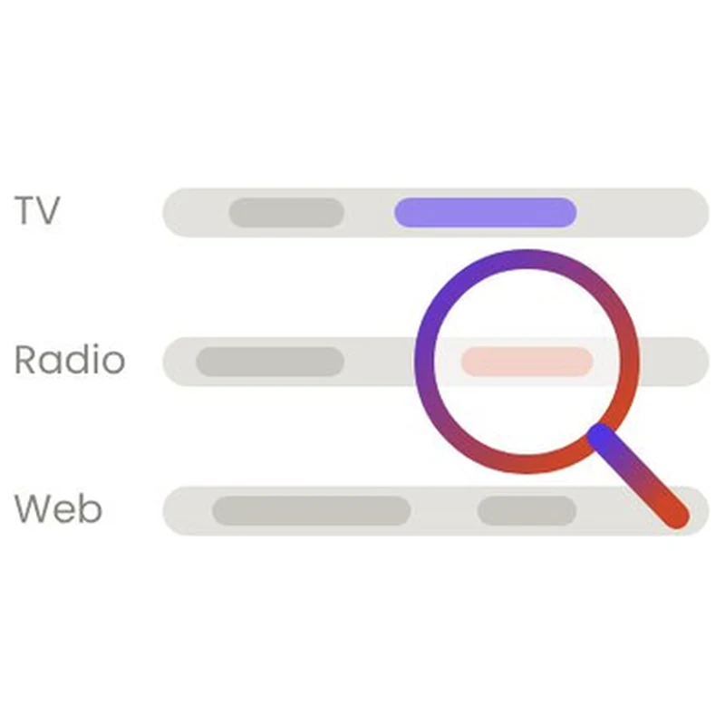
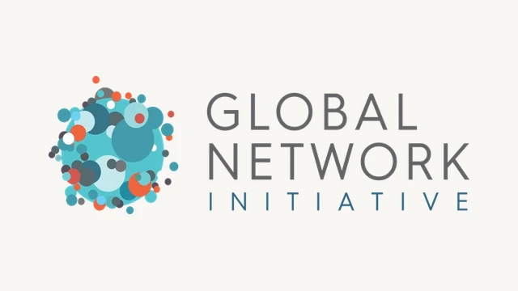

At Penn MEDIATED, we work to better understand the information ecosystem through cutting-edge science, then leverage that research to strengthen the foundations of democracy.
In a new Carnegie Endowment paper, Alex Engler and Danaé Metaxa argue for longitudinal monitoring to understand how LLMs impact politics.
Three new Knight Fellows join Penn MEDIATED, expanding our community of researchers studying the information ecosystem.

Computational Research of the Information Ecosystem
Our redesigned research compendium is a one-stop shop for Penn research on the quantitative study of the information ecosystem.

Penn MEDIATED is delighted to announce our membership with the Global Network Initiative — a diverse community of institutions and experts working to advance a free and democratic technological future.
A joint effort with the Atlantic Council’s DFRLab on the Digital Sherlocks programme.
We are proud to welcome affiliated faculty across Penn's schools whose research explores how media and technology shape political attitudes and the information ecosystem.
Explore our catalog of Penn's cutting-edge research on information integrity, media ecosystems, political speech, democratic resilience, and much more.
Explore All ResearchAI assistance in online research submissions is very rare and has not increased in three years.
Evidence linking algorithms to harmful online outcomes is inconclusive, as user preferences and content supply also shape what people consume.
A new tool automatically analyzes hundreds of top news articles from major outlets, searching for biases and themes in real time. It can be accessed on the Media Bias Detector website.
The Penn Center on Media, Technology and Democracy (Penn MEDIATED) is committed to independent research on the information ecosystem and its impact on democracy.
Our mission is to advance our collective understanding of the information landscape through cutting-edge science—then leverage that research to foster a more informed society and strengthen the foundations of democracy.
Learn More About the CenterOur 25 affiliated faculty are distinguished by their rigorous empirical and computational research that advances the collective understanding of the information ecosystem.
Learn More About Our Affiliated Faculty